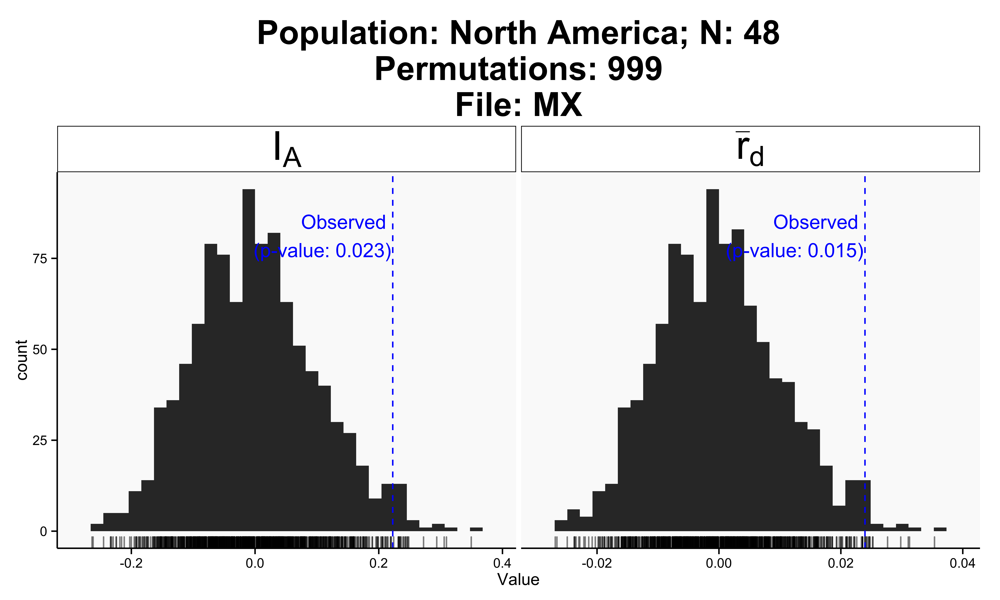
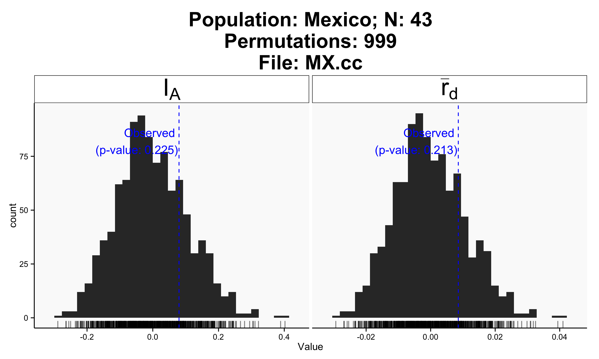
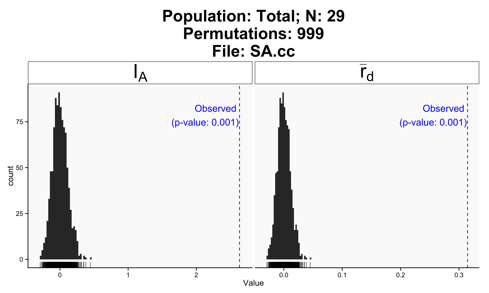

7: Linkage disequilibrium
In this chapter we will formally test if populations are in linkage disequilibrium or not. This test is useful to determine if populations are clonal (where significant disequilibrium is expected due to linkage among loci) or sexual (where linkage among loci is not expected). The null hypothesis tested is that alleles observed at different loci are not linked if populations are sexual while alleles recombine freely into new genotypes during the process of sexual reproduction. In molecular ecology we typically use the index of association or related indices to test this phenomenon.
The index of association
The index of association (\(I_A\)) was originally proposed by Brown et al. (Brown et al. 1980) and implemented in the poppr R package (Kamvar et al. 2014) using a permutation approach to assess if loci are linked as described previously by Agapow and Burt (Agapow & Burt, 2001). Agapow and Burt also described the index \(\bar{r}_d\) that accounts for the number of loci sampled that is less biased and will be used here.
library(poppr)
data(Pinf)
MX <- popsub(Pinf, "North America") #subset population to North Americaia(MX, sample=999) # include 999 permutations, where Ia is also calculated for the observed data, thus enabling a null distribution of 1000 observations## |================================================================| 100%
## Ia p.Ia rbarD p.rD
## 0.22261 0.02300 0.02396 0.01500For advanced users: To reproduce results use the function
set.seed()before invokingia().
We observe 48 individuals and see that \(P = 0.015\) for \(\bar{r}_d = 0.024\). We thus reject the null hypothesis of no linkage among markers. Notice, however, that the observed \(\bar{r}_d\) falls on the right tail of the re-sampled distribution and the P value is close to \(P = 0.01\). Could this population have clones? We can find out by displaying the data.
MX##
## This is a genclone object
## -------------------------
## Genotype information:
##
## 43 multilocus genotypes
## 48 tetraploid individuals
## 11 codominant loci
##
## Population information:
##
## 2 hierarchical levels - Continent Country
## 1 populations defined - North AmericaIndeed we observe 43 multilocus genotypes out of 48 samples. We are looking at partial clonality and thus need to use clone-corrected (also called clone-censored) data:
MX.cc <- clonecorrect(MX, hier = ~Continent/Country, keep = 2) # remove clones from Mexican populationia(MX.cc, sample = 999) # include 999 permutations## |================================================================| 100%
## Ia p.Ia rbarD p.rD
## 0.079811 0.225000 0.008569 0.213000Now \(\bar{r}_d\) is located more centrally in the distribution expected from unlinked loci. Note that \(P\) has improved and we fail to reject the null hypothesis of no linkage among markers. Thus it spears that populations in Mexico are partially sexual.
Next let’s use the same process to evaluate the South American population:
SA <- popsub(Pinf, "South America")ia(SA, sample = 999) # include 999 permutations## |================================================================| 100%
## Ia p.Ia rbarD p.rD
## 2.8733 0.0010 0.3446 0.0010Here we find significant support for the hypothesis that alleles are linked across loci with \(P < 0.001\). The observed \(\bar{r}_d = 0.345\) and falls outside of the distribution expected under no linkage. Let’s look at the clone-corrected data and make sure this is not an artifact of clonality:
SA.cc <- clonecorrect(SA, hier = ~Continent/Country, keep = 2)ia(SA.cc, sample=999) # include 999 permutations## |================================================================| 100%
## Ia p.Ia rbarD p.rD
## 2.6335 0.0010 0.3146 0.0010Both clone-corrected (\(N = 29\)) and uncorrected data (\(N = 38\)) reject the hypothesis of no linkage among markers. We thus have support for populations in Mexico being sexual while those in South America are clonal.
This approach has been applied to provide support for Mexico as the putative center of origin of the potato late blight pathogen P. infestans (Goss et al. 2014). At the center of origin this organism is expected to reproduce sexually, while South American populations are clonal.
References
P-M Agapow, A Burt, (2001) Indices of multilocus linkage disequilibrium. Molecular Ecology Notes 1 (1-2) 101-102 http://onlinelibrary.wiley.com/doi/10.1046/j.1471-8278.2000.00014.x/abstract
AHD Brown, MW Feldman, E Nevo, (1980) Multilocus structure of natural populations of Hordeum spontaneum. Genetics 96 (2) 523-536 http://www.genetics.org/content/96/2/523
EM Goss, JF Tabima, DEL Cooke, S Restrepo, WE Fry, GA Forbes, VJ Fieland, M Cardenas, NJ Grünwald, (2014) The Irish famine pathogen Phytophthora infestans originated in central Mexico rather than the Andes. Proceedings of the National Academy of Sciences ## (3) in press-NA
ZN Kamvar, JF Tabima, NJ Grünwald, (2014) Poppr: an R package for genetic analysis of populations with clonal, partially clonal, and/or sexual reproduction. PeerJ 2 e281-NA 10.7717/peerj.281